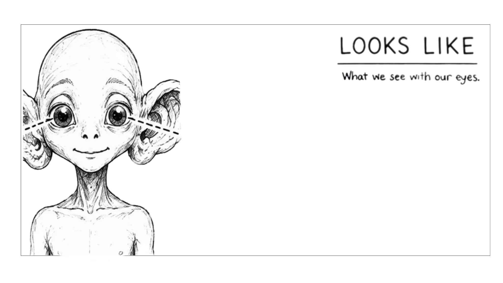
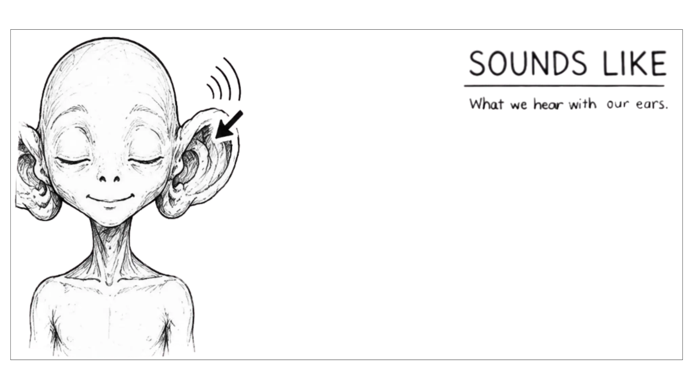

FIRST CONTACT // EARTH CLASSROOM
GLORB
INCOMING TRANSMISSION
Searching 47 light years of classroom space…

FIRST CONTACT // EARTH CLASSROOM
RESEARCH BRIEFING

ACTIVE LISTENING CARD

EARTH EXPERT CONSOLE
We are learning to identify what active listening looks like, sounds like and feels like, and how our body helps us listen.
MISSION 01

GLORB: I need your help understanding human listening. I have discovered it can look like, sound like and feel like different things. Can you help me sort each option into the correct category?
Drag each card into the correct category. You can also tap a card and then tap a category.

What we see with our eyes.

What we hear with our ears.
What we feel in our heart and body.
MISSION 02

GLORB: I need your help understanding what my body should do when I am listening. Drag each instruction to the correct part of my body.
Drag an instruction to the matching body part, or tap an instruction and then tap the body part.
MISSION 03

GLORB
“Pip is coming back. Their dog is still sick. I have one cloud fact ready, but I now suspect this is not the correct moment. What should I do?”

FINAL INCIDENT REPORT
Glorb: “Pip, I would like to try that conversation again. I am facing you. I will wait until you finish. Is your dog feeling better?”
Pip: “A little. Thanks for asking.”
Glorb: “They are still talking to me. This is going well. My ears are currently 83% happier.”